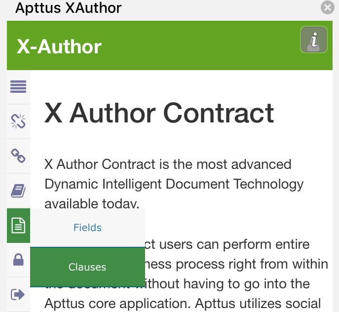
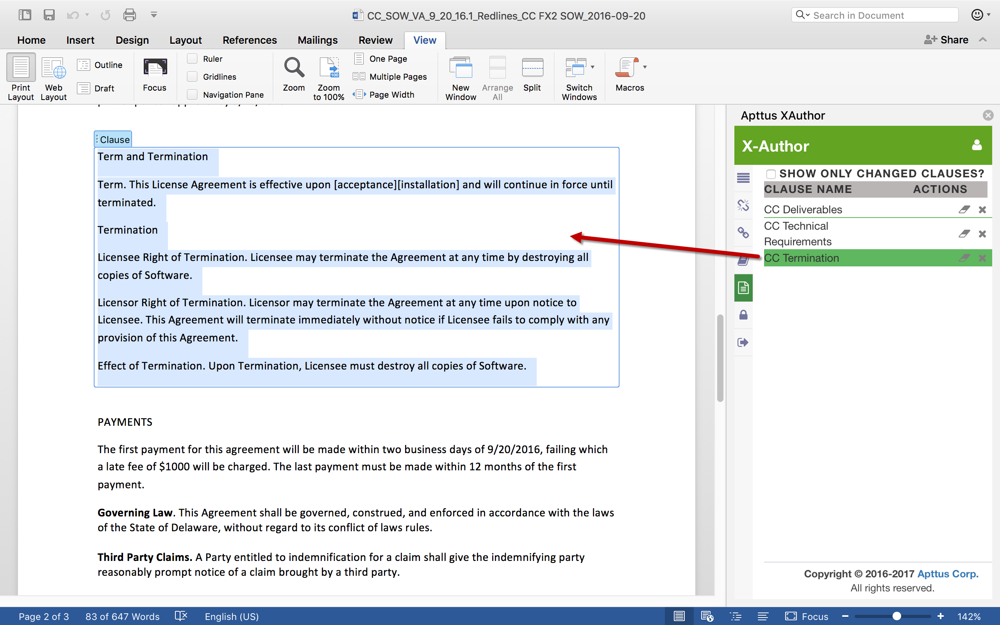

Working with Clauses
The Clauses section of the Document Panel lists all smart clauses in the agreement document.
Use the Document Panel to take the following actions on clauses:
To view a clause
-
Hover over the
 Document tab and select Clauses to
open the Documents Panel.
Document tab and select Clauses to
open the Documents Panel.

-
To view only changed clauses, select "Show Only Changed Clauses" at the top of the panel.

The document scrolls to highlight the selected clause.

Sections and supporting documents do not display in the list of clauses if they contain a smart field.
To reject changes to a clause
During multiple rounds of negotiation, the text of a clause in your agreement is likely to be modified.
Changes to clauses can be tracked over multiple check-ins, as long as redlining is preserved. Changes to clauses only become permanent when the document is checked in and reconciled.
To reject the changes to a clause:
-
Hover over the
Document tab and select Clauses to open the Documents Panel.

The clause is reverted to its previous value prior to the change. The Document pane reloads to show the change.
To mark a clause for deletion
When you delete a clause from an agreement, the entire clause is removed from the text of the document.
-
Click the
 icon to
delete the selected clause.
icon to
delete the selected clause.
A dialog is displayed in the X-Author pane asking you to confirm the deletion.

The clause is removed from the document and a "Deleted" entry is recorded in the Agreement Clause related list on the agreement record in Salesforce.
To unmark a clause
You must have marked static text in the agreement document as a clause in the same session using Playbook. Unmarking a clause removes Apttus clause properties and returns the text to a static state.